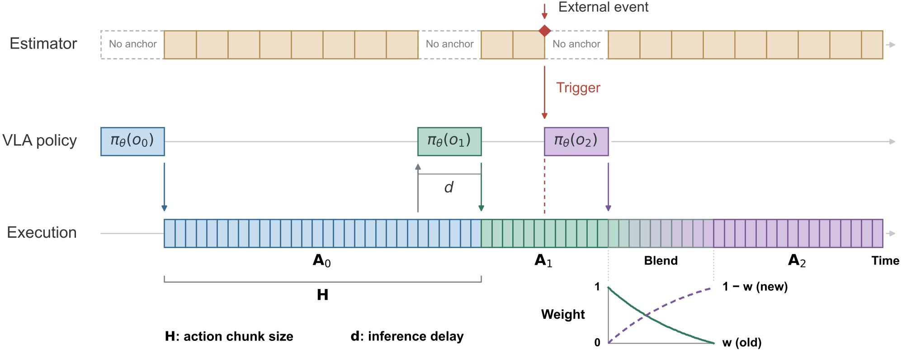

{kind=link}
Observe a pair
A lightweight decoder compares visual features from the anchor observation and the latest camera observation. Training supervision comes from the discrepancy between predicted actions and demonstrated actions.
Event-Triggered Asynchronous
Inference for VLA Policies
Preserve motion consistency when the scene is stable. Update the policy when the world changes.
Research overview
Vision-Language-Action (VLA) models commonly predict action chunks, limiting their ability to react to environmental changes during execution. Existing asynchronous inference methods improve reactivity but typically rely on a fixed inference gap. In this paper, we propose an event-guided dynamic inference strategy that adapts the inference gap according to scene changes observed since the previous inference. Thereby, it simultaneously preserves motion consistency and prompt reactivity. Across static and dynamic real-world settings, our method consistently performs best, averaging 95% success and exceeding the strongest baseline by 55 percentage points. The code will be made publicly available upon acceptance.
The compiled film labels obstacle-task playback at 2× and moving-target playback at 1×. Individual clips below retain the timing of the supplied videos.
Mean success across
three evaluation settings
Absolute success-rate difference
95% − 40% · 55 percentage points
Trials per method
in each setting
01 / The problem
Action chunks keep a robot moving. But the world can change before a chunk finishes.
A fixed inference gap creates a trade-off: longer gaps preserve uninterrupted motion, while shorter gaps bring in fresh observations more often. Frequent transitions, however, can disturb the precise movements needed for grasping.
We adapt inference timing to visual events, keeping a long gap in stable scenes and triggering an earlier update when the scene changes.
Fewer chunk transitions.
Slower response to unexpected changes.
More recent observations.
More transitions during precise manipulation.
A long gap by default.
An earlier update when an event is detected.
02 / The method
Compare the current observation with the scene used to predict the active action chunk.

A lightweight decoder compares visual features from the anchor observation and the latest camera observation. Training supervision comes from the discrepancy between predicted actions and demonstrated actions.
Trigger early inference after two consecutive estimates exceed the event threshold. Otherwise, start the next inference after H − d actions have executed, leaving d actions to cover the inference delay. The paper defines its threshold from the 90th percentile of static-demonstration scores.
When the updated chunk arrives, blend the overlapping actions. The old chunk’s weight decreases from 1 to 0 as the new chunk takes over.
Amerge = w Aold + (1 − w) Anew
The event score is an action-discrepancy proxy. It is not a collision probability or a safety guarantee.
For each task, the paper uses 40 static and 160 dynamic demonstrations. The π₀.₅ policy is fine-tuned on the static subset; anchor–current observation pairs from the combined dataset supervise the event estimator.
Franka Emika Panda, three RGB camera views, a 50-action horizon, 30 Hz execution, and 15 Hz event estimation. The paper reports a five-action inference delay for methods other than RTC and a blending decay β = 1.2.
These are the study settings reported in the paper (§IV–V), rather than measurements made by this webpage.
03 / Compared methods
All configurations use the same π₀.₅ backbone. The fixed-gap ablations disable event estimation and retain the remaining execution components.
Policy inference and action execution alternate, without overlap.
Discard actions whose intended execution steps elapse during inference, then update the buffer with the remaining chunk.
Condition new chunks on committed actions using inference-time inpainting and soft masking.
Schedule updates at g ∈ {0, 5, 25, 45}. The event estimator is disabled.
04 / Real-world evaluation
Three settings separate precise manipulation, obstacle response, and adaptation to a moving target.
Experiment 01
The obstacle remains stationary during transport. The robot must pick up the blue cube, carry it around the obstacle, and place it on the green plate.
Choose a video case
Filter by method, then select a case to watch.
Paper §VI-A, Table II(a)
Frequent chunk transitions can disrupt precise gripper–object alignment. Here, the event-triggered method preserves a long inference gap when no significant change is detected, matching synchronous execution and the long-gap ablations.
A successful pick, obstacle avoidance, and placement in one continuous trial.
| Method | Pick | Avoidance | Place | Full task |
|---|---|---|---|---|
| Synchronous | 100% | 100% | 100% | 100% |
| DynamicVLA | 0% | 100% | 90% | 0% |
| RTC | 0% | 100% | 100% | 0% |
| Fixed-gap (g = 0) | 0% | 100% | 100% | 0% |
| Fixed-gap (g = 5) | 30% | 100% | 100% | 30% |
| Fixed-gap (g = 25) | 100% | 100% | 100% | 100% |
| Fixed-gap (g = 45) | 100% | 100% | 100% | 100% |
| Ours | 100% | 100% | 100% | 100% |
Experiment 02
During transport, a human operator repeatedly places a hand in the robot’s current path. After each avoidance response, the hand is repositioned to obstruct the updated path.
Choose a video case
Filter by method, then select a case to watch.
Paper §VI-B.1, Table II(b)
The event estimator monitors the current scene against the observation used for the active chunk. A persistent change triggers an earlier policy update, allowing another avoidance response while retaining reliable grasping.
Short-gap baselines can avoid obstacles yet still fail the full task because of grasping failures.
| Method | Pick | Avoidance | Place | Full task |
|---|---|---|---|---|
| Synchronous | 100% | 0% | 100% | 0% |
| DynamicVLA | 0% | 0% | 100% | 0% |
| RTC | 15% | 95% | 100% | 15% |
| Fixed-gap (g = 0) | 0% | 95% | 100% | 0% |
| Fixed-gap (g = 5) | 15% | 90% | 100% | 15% |
| Fixed-gap (g = 25) | 90% | 0% | 95% | 0% |
| Fixed-gap (g = 45) | 100% | 0% | 100% | 0% |
| Ours | 100% | 100% | 100% | 100% |
Experiment 03
The robot starts with the object already grasped. As the object approaches the plate, the operator moves the plate away and changes its direction, requiring repeated placement updates.
Choose a video case
Filter by method, then select a case to watch.
Paper §VI-B.2, Figures 4, 6–7
A long gap can leave the robot following a placement trajectory toward the previous plate position. Event-triggered updates adapt the action sequence to the relocated target; simply inferring as often as possible is not sufficient.
The best fixed-gap ablation reaches 60%; RTC reaches 40% in this setting.
05 / Overall performance
The event-triggered method reaches 100%, 100%, and 85% success. Their equally weighted mean is 95%, compared with 40% for the strongest fixed-gap ablation.
| Method | Static obstacle | Dynamic obstacle | Moving target | Mean |
|---|---|---|---|---|
| Synchronous | 100% | 0% | 5% | 35% |
| DynamicVLA | 0% | 0% | 0% | 0% |
| RTC | 0% | 15% | 40% | 18% |
| Fixed-gap (g = 0) | 0% | 0% | 30% | 10% |
| Fixed-gap (g = 5) | 30% | 15% | 60% | 35% |
| Fixed-gap (g = 25) | 100% | 0% | 20% | 40% |
| Fixed-gap (g = 45) | 100% | 0% | 15% | 38% |
| Ours | 100% | 100% | 85% | 95% |
Mean = (static-obstacle + dynamic-obstacle + moving-target success) / 3, rounded to the nearest whole percent. The paper’s Figure 8 shows their sum on a 0–300 scale; this table shows the equivalent mean on a 0–100% scale. Results describe the evaluated tasks and configurations.
Explore the work
Anonymous supplementary material for an ICRA submission.
Code will be made publicly available upon acceptance.